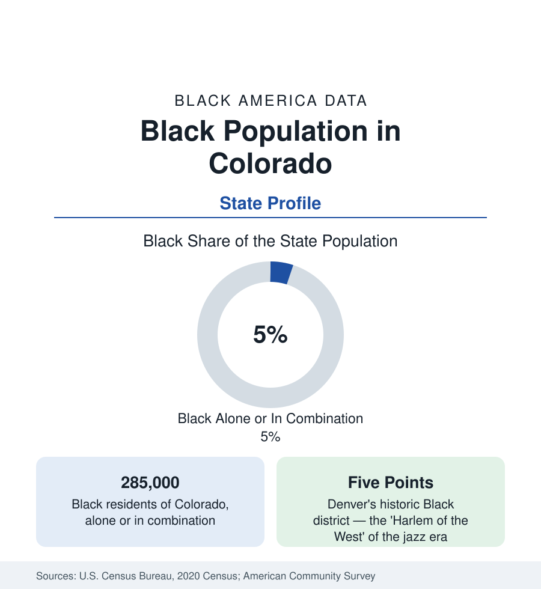

Black Census
Black Population in Colorado: The Front Range Community
About 285,000 Black Coloradans — one in twenty residents — concentrated along the Front Range from Denver to Colorado Springs. The census profile.

Colorado holds about 285,000 Black residents — Black alone or in combination — roughly one in twenty of its people, with Black alone at about 231,000, or 4 percent. The population is a Front Range population: the great majority live in the urban corridor from Fort Collins through Denver to Colorado Springs, with Denver–Aurora holding the largest share. Colorado's Black community is small as western populations go, old in its Denver roots, and — in the survey data — among the most educated and highest-earning Black populations of any state. This article profiles it.
Denver and the Corridor
Metro Denver holds roughly two-thirds of Black Colorado, with the detail in the cities section: the historic Five Points district, the suburban center of Aurora (the state's most diverse city), and the dispersal across the metro's counties. Colorado Springs, the corridor's southern anchor, holds the second community — some 45,000 to 55,000 Black residents in its metro — shaped by the military economy of Fort Carson and the Air Force installations at a share well above the state's. Boulder records a small, university-shaped Black population at roughly 1 to 2 percent of the city, among the smallest shares of any major college town in this reference; Fort Collins, Greeley, and Pueblo record small communities in the low single digits, Pueblo's with steel-era roots. Beyond the corridor, the mountain and western-slope counties record Black shares under 1 percent nearly everywhere.
Formation: Railroads, Homesteaders, and the Air Force
Colorado's Black history runs on three tracks. The first is the railroad and mining West: Black Denver grew around the rail yards and the service economy from the territorial era, and Five Points — named for its five-way intersection — became by the early twentieth century a celebrated Black district, its Rossonian Hotel hosting the jazz era's touring greats who could not stay downtown. The second track is the homestead colonies: Dearfield, founded in 1910 on the eastern plains as an all-Black agricultural town, whose surviving buildings the National Park Service now preserves — its peak population in the hundreds, its data the plains counterpart to the Delta's deep base. The third track is the military: the Air Force Academy, Buckley, Fort Carson, and (in the Second World War) the training fields drew Black servicemembers and families who stayed, making Colorado Springs' and Aurora's communities disproportionately military in origin and, downstream, in their income and homeownership data.
Indicators at the Western Pattern
Colorado's Black indicators sit at the favorable end of this reference's distributions on several measures: educational attainment above the national Black averages (the migration's selectivity and the university corridor together), median household income above the national Black figure, and unemployment nearer the state's overall rate than in most profiles. The counterweights are the housing data — Denver's appreciation has displaced Black households from the historic districts, and the state's Black homeownership rate, while respectable in national comparison, trails the state's overall rate by the familiar twenty-plus points — and health access across a largely rural state. The state's African immigrant communities (Ethiopian and East African above all, in Aurora and Denver) are growing layers in the composition data.
Reading the Colorado Numbers
Institutions and the Small-Share Challenge
A Black population of one in twenty poses the institutional arithmetic this reference meets in the West's smaller profiles: the numbers support a full civic layer — churches, media, professional associations, a Black chamber — but not the parallel institutional world of the Black Belt or the big metros. Colorado's layer runs through the University of Colorado system and Colorado State, the state's two Black-published media institutions, the Divine Nine's Denver alumni presence, and the churches of Five Points and Aurora. The state's Black elected representation, in the recent counts, runs at or slightly above the population share in the legislature — a proportionality the larger-share states in the South often do not match — while the attainment data (a BA-plus share above the national Black figure) describe the professional base the institutions draw on.
Colorado is the small-share, strong-indicator western profile: 285,000 people, one in twenty, with outcomes that reflect a community built by selective migration and military settlement rather than mass labor recruitment. Its Five Points-to-suburbs story compresses the national one into a single corridor — and its remaining question, visible in Denver's displacement data, is whether the historic center survives the prosperity around it.
More in Black Census
The Black Population of the United States: Size, Definitions, and Distribution
The Black population of the United States totals 52.8 million — 15.4 percent of the nation. How the Census Bureau defines and counts the population, and where it lives.
Black Median Household Income in the United States
Black median household income stands at $56,490 in the Census Bureau's annual income report — how the figure is measured, how it compares, and what drives it.
The Black Poverty Rate: Levels, Children, and the Long Trend
The official Black poverty rate is 17.1 percent — against 11.1 percent nationally and 7.7 percent for non-Hispanic White Americans. How poverty is measured and what the data show.
Source: U.S. Census Bureau, 2020 Census; American Community Survey; Population Estimates Program.